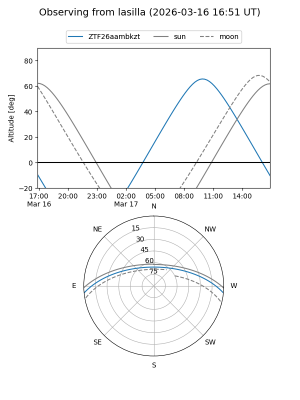
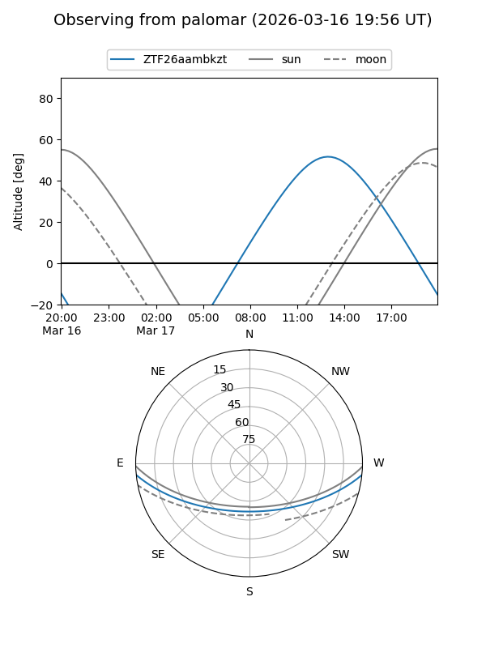

ZTF26aambkzt
Target ZTF26aambkzt at 2026-03-16 13:25
Aliases and brokers:
FINK: link
Lasair: link
ALeRCE: link
alt names
ZTF26aambkzt (ztf,fink_ztf)
Coordinates:
equatorial (ra, dec) = 252.3948,-4.89109
equatorial (HMS+DMS) = 16:49:34.75,-04:53:27.94
galactic (l, b) = (13.3070,+24.24938)
Flags:
Photometry:
last ztfg=16.97
1 ztfg detections
Lightcurve
Visibility


Additional plots